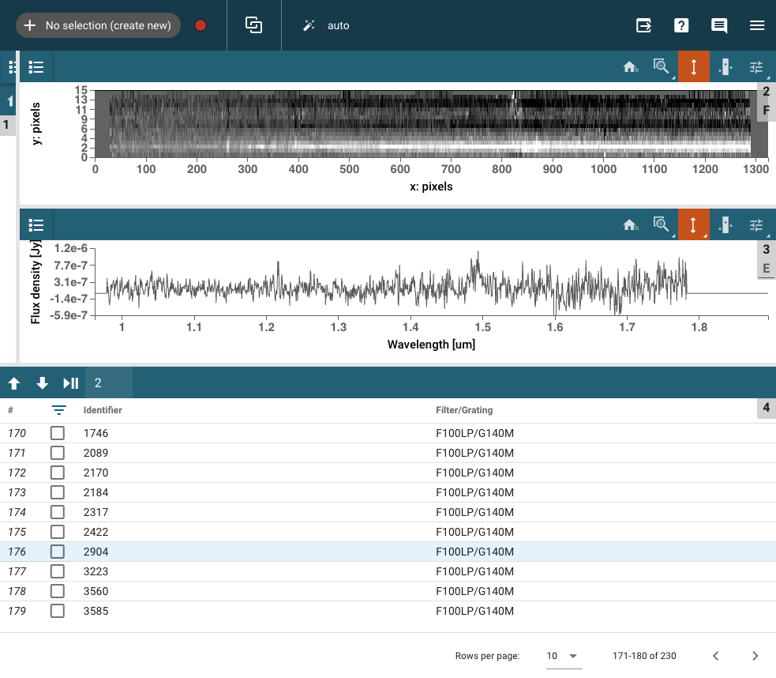
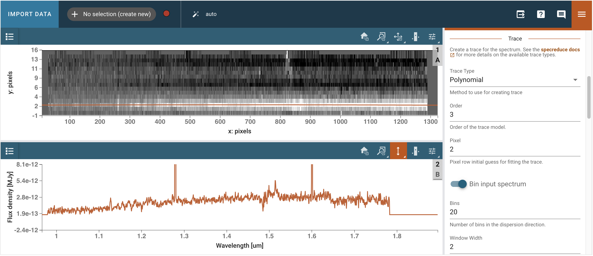
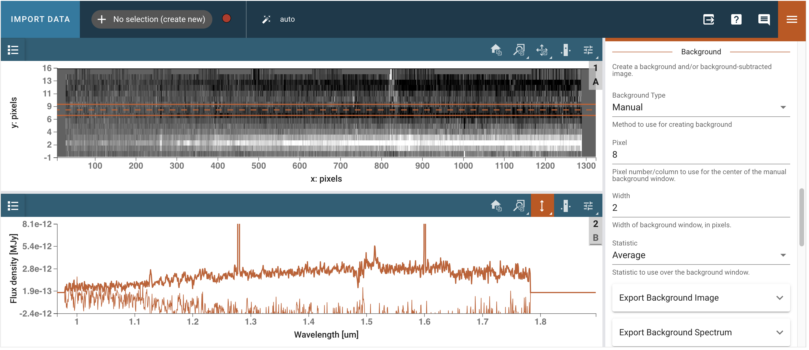
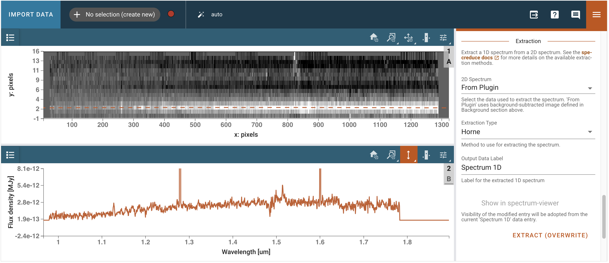
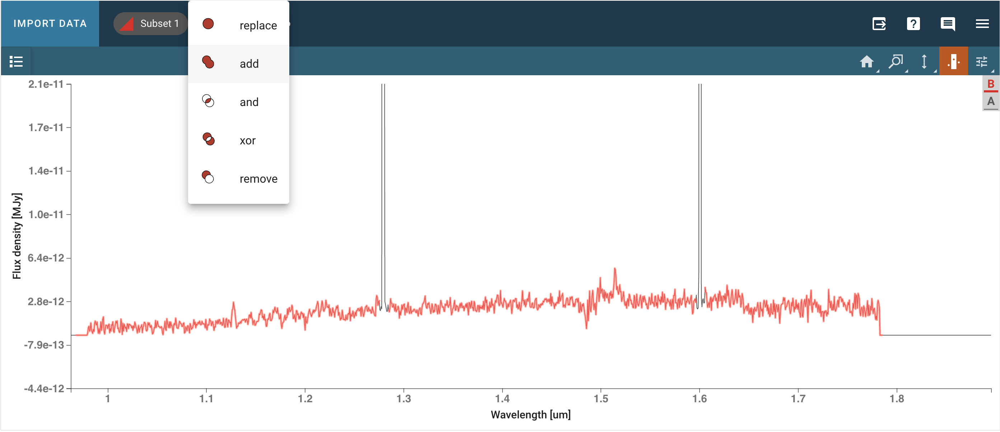
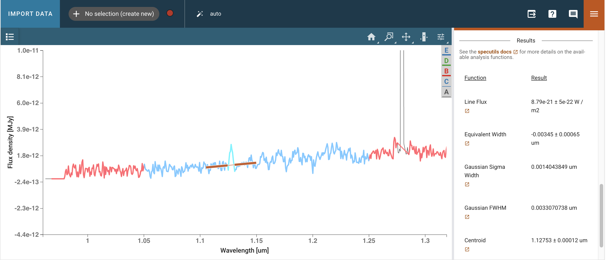
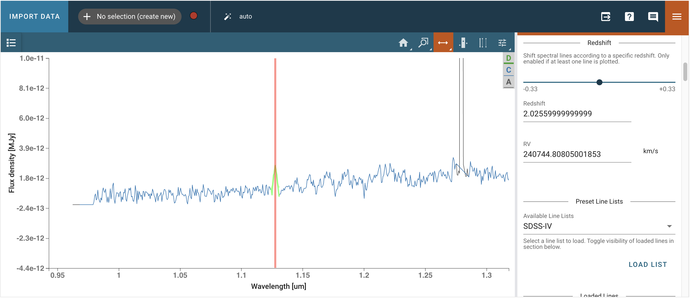
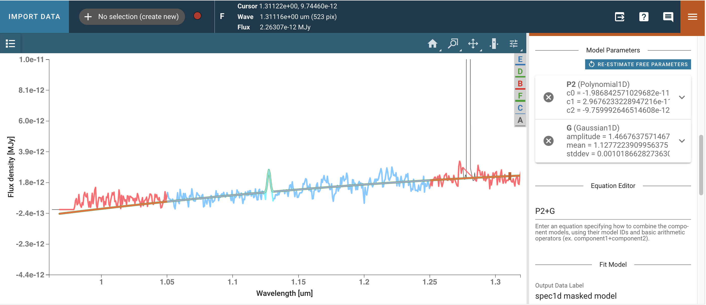

星系外场的MOS光谱#
用例： 对一维光谱进行发射线测量和模板匹配。
数据： CEERS NIRSpec观测数据
工具： specutils, astropy, matplotlib, jdaviz。
跨仪器：
文档： 本笔记本是STScI更大后处理数据分析工具生态系统的一部分。
介绍#
在本笔记本中，我们将检查一组光谱，并对一个示例光谱进行一系列光谱分析，包括连续光谱拟合和减去、谱线识别、质心测量和通量测量、高斯拟合、等效宽度和模板拟合。我们将使用交互式的jdaviz包和命令行来完成这些工作。我们将使用来自CEERS计划的JWST/NIRSpec光谱数据集。
笔记本的目标#
本笔记本的目的是展示如何使用可视化工具Jdaviz或结合Specutils+Matplotlib来测量NIRSpec光谱中OII发射线的特性。
工作流程#
在Mosviz中可视化光谱数据集
选择一个星系（s02904）并在Specviz2d中可视化
使用Specviz2d中的光谱提取插件对亮伴星进行一维提取
将波长轴附加到提取的一维光谱上
选择OII发射线并进行测量
源的红移
发射线的特性
拟合一个包含连续光谱+高斯的模型到OII发射线
使用Specutils和Matplotlib而不是Jdaviz执行相同的任务
找到观察光谱的最佳拟合模板
系统要求#
首先，我们创建一个包含所有所需光谱包的jdaviz环境。
conda create -n jdaviz python
conda activate jdaviz
pip install jdaviz
导入#
# general os
import zipfile # 导入zipfile模块，用于处理ZIP文件
import urllib.request # 导入urllib.request模块，用于处理URL请求
from pathlib import Path # 从pathlib导入Path类，用于处理文件路径
# general plotting
from matplotlib import pyplot as plt # 从matplotlib导入pyplot模块，用于绘图
# table/math handling
import numpy as np # 导入numpy库，用于数值计算
# astropy
import astropy # 导入astropy库，天文学相关工具
import astropy.units as u # 导入astropy.units模块，用于单位处理
from astropy.io import fits, ascii # 从astropy.io导入fits和ascii模块，用于读写数据
from astropy.nddata import StdDevUncertainty # 从astropy.nddata导入StdDevUncertainty类，用于处理不确定性
from astropy.modeling import models # 从astropy.modeling导入models模块，用于模型处理
from astropy.visualization import quantity_support # 从astropy.visualization导入quantity_support，用于支持单位可视化
# specutils
import specutils # 导入specutils库，用于光谱数据处理
from specutils import Spectrum1D, SpectralRegion # 从specutils导入Spectrum1D和SpectralRegion类
from specutils.fitting import fit_generic_continuum # 从specutils.fitting导入fit_generic_continuum函数，用于拟合连续谱
from specutils.fitting import find_lines_threshold # 从specutils.fitting导入find_lines_threshold函数，用于查找谱线
from specutils.fitting import fit_lines # 从specutils.fitting导入fit_lines函数，用于拟合谱线
from specutils.manipulation import extract_region # 从specutils.manipulation导入extract_region函数，用于提取光谱区域
from specutils.analysis import centroid # 从specutils.analysis导入centroid函数，用于计算质心
from specutils.analysis import line_flux # 从specutils.analysis导入line_flux函数，用于计算谱线通量
from specutils.analysis import equivalent_width # 从specutils.analysis导入equivalent_width函数，用于计算等效宽度
from specutils.analysis import template_comparison # 从specutils.analysis导入template_comparison函数，用于模板比较
# jdaviz
import jdaviz # 导入jdaviz库，用于数据可视化
from jdaviz import Mosviz, Specviz2d, Specviz # 从jdaviz导入Mosviz、Specviz2d和Specviz类，用于不同的可视化工具
# glue
from glue.core.roi import XRangeROI # 从glue.core.roi导入XRangeROI类，用于定义X轴范围的感兴趣区域
np.seterr(all='ignore') # 设置numpy忽略所有错误，隐藏与除零相关的警告
quantity_support() # 启用单位支持，使matplotlib自动识别单位
# Matplotlib parameters
params = {'legend.fontsize': '18', # 设置图例字体大小
'axes.labelsize': '18', # 设置坐标轴标签字体大小
'axes.titlesize': '18', # 设置坐标轴标题字体大小
'xtick.labelsize': '18', # 设置X轴刻度标签字体大小
'ytick.labelsize': '18', # 设置Y轴刻度标签字体大小
'lines.linewidth': 2, # 设置线条宽度
'axes.linewidth': 2, # 设置坐标轴线宽度
'animation.html': 'html5'} # 设置动画输出格式为html5
plt.rcParams.update(params) # 更新matplotlib的参数设置
plt.rcParams.update({'figure.max_open_warning': 0}) # 禁用最大打开图形的警告
检查版本。最新的工作环境是：#
Numpy: 2.1.0
Astropy: 6.1.2
Specutils: 1.16.0
Jdaviz: 3.10.3
# 打印Numpy库的版本
print("Numpy: ", np.__version__)
# 打印Astropy库的版本
print("Astropy: ", astropy.__version__)
# 打印Specutils库的版本
print("Specutils: ", specutils.__version__)
# 打印Jdaviz库的版本
print("Jdaviz: ", jdaviz.__version__)
设置数据路径并从链接下载#
# 从旧版本的笔记本下载数据。它们包含拟合的模板
boxlink = 'https://data.science.stsci.edu/redirect/JWST/jwst-data_analysis_tools/mos_spectroscopy/mos_spectroscopy.zip' # 数据链接
boxfile = Path('./mos_spectroscopy.zip') # 定义下载文件的路径
urllib.request.urlretrieve(boxlink, boxfile) # 下载文件并保存到指定路径
zf = zipfile.ZipFile(boxfile, 'r') # 打开下载的zip文件
zf.extractall() # 解压缩zip文件中的所有内容
# 下载s2d和x1d文件
boxlink_ceers = 'https://data.science.stsci.edu/redirect/JWST/jwst-data_analysis_tools/mos_spectroscopy/mos_ceers_data.zip' # 数据文件的链接
boxfile_ceers = Path('./mos_ceers_data.zip') # 本地保存的文件路径
urllib.request.urlretrieve(boxlink_ceers, boxfile_ceers) # 从链接下载文件并保存到本地
zf = zipfile.ZipFile(boxfile_ceers, 'r') # 打开下载的zip文件
zf.extractall() # 解压缩zip文件中的所有内容
开发者注释：
JWST 数据可以直接从 MAST 下载，但观测数据被组织在不同的文件夹中，而 Mosviz 希望将数据放在一个文件夹中。因此，我们选择了盒子下载。
# pathtodata = Path('/home/shared/preloaded-fits/jdaviz_data/mos_ceers_data') # 原始数据路径（已注释）
pathtodata = Path('./data') # 设置数据路径为当前目录下的data文件夹
Mosviz中的开放数据#
在Mosviz中，我们可以探索文件夹中的所有数据产品。这个单元运行需要一到两分钟。由于我们不包含图像，我们可以将2D/1D光谱查看器扩展到使用GUI的全宽度。我们还可以保持插件托盘打开在元数据上，以检查我们正在查看的文件的具体信息。
{kind=link}
选择一个星系#
我们选择 s02904，因为我们想提取目标下方的非常明亮的伴星。
# 定义第一个文件的路径，包含JWST NIRSpec一维数据
file1d = pathtodata / 'jw01345-o064_s02904_nirspec_f100lp-g140m_x1d.fits'
# 定义第二个文件的路径，包含JWST NIRSpec二维数据
file2d = pathtodata / 'jw01345-o064_s02904_nirspec_f100lp-g140m_s2d.fits'
使用Specviz2d提取更好的1D光谱#
specviz2d = Specviz2d() # 创建一个Specviz2d对象，用于处理和可视化光谱数据
specviz2d.load_data(file2d) # 加载二维光谱数据文件
specviz2d.show() # 显示加载的光谱数据
开发者备注
有没有办法从提取中获得不确定性数组？
这个问题正在处理之中。
我们打开光谱提取插件，并选择适当的轨迹（多项式，3阶，在像素2），背景（手动，在像素8，宽度2，统计量平均），以及提取（来自插件，Horne）。然后我们点击提取，并在1D查看器中检查提取的光谱。
  {kind=link}
{kind=link}
{kind=link}
# 从Specviz2d中提取光谱数据
spectra = specviz2d.get_data('Spectrum 1D') # 获取名为'Spectrum 1D'的光谱数据
spectra # 输出提取的光谱数据
# 包含一些假设的不确定性，目前使用的是一个小的常数值
spec1d = Spectrum1D(spectral_axis=spectra.spectral_axis, # 创建一维光谱对象，光谱轴来自输入数据
flux=spectra.flux, # 光谱的流量数据
uncertainty=StdDevUncertainty((np.zeros(len(spectra.flux)) + 1E-13) * spectra.unit)) # 创建不确定性对象，使用一个小的常数值作为不确定性
spec1d # 返回创建的光谱对象
# 导入Specviz库并初始化
specviz = Specviz() # 创建Specviz实例
# 加载一维光谱数据，并为其指定标签
specviz.load_data(spec1d, data_label='spec1d calibrated') # 加载经过校准的一维光谱数据
# 显示Specviz界面
specviz.show() # 展示Specviz窗口
数据中仍然存在一些伪影，但我们可以选择一个子集，屏蔽这些伪影，从而获得没有不必要尖峰的光谱。我们可以使用工具选择子集，选择顶部工具栏中的“添加”选项，以将多个区域作为单个子集进行选择。
{kind=link}
# 如果尚未手动创建感兴趣区域，则创建一个子集
try:
# 获取标记为'spec1d calibrated'的数据，并选择名为'Subset 1'的光谱子集
region1 = specviz.get_data(data_label='spec1d calibrated', spectral_subset='Subset 1')
print(region1) # 打印获取的子集信息
region1_exists = True # 标记子集存在
except Exception:
print("There are no subsets selected.") # 如果没有选择子集，打印提示信息
region1_exists = False # 标记子集不存在
# 如果子集不存在，则为掩蔽[OII]附近的伪影定义光谱区域
if not region1_exists:
sv = specviz.app.get_viewer('spectrum-viewer') # 获取光谱查看器
sv.toolbar_active_subset.selected = [] # 清空当前选中的子集
sv.apply_roi(XRangeROI(1., 1.27)) # 应用感兴趣区域，范围为1到1.27
# 获取带掩膜的光谱
spec1d_region = specviz.get_spectral_regions() # 从specviz中获取光谱区域
spec1d_masked = extract_region(spec1d, spec1d_region['Subset 1'], return_single_spectrum=True) # 提取指定区域的光谱并返回单一光谱
# 导入specviz库以加载光谱数据
specviz.load_data(spec1d_masked, data_label='spec1d masked') # 加载被掩蔽的1D光谱数据，并设置数据标签为'spec1d masked'
# 将提取的光谱写入一个fits文件
file_extracted = Path('./extracted_spectrum.fits') # 定义输出文件路径
spec1d_masked.write(file_extracted, overwrite=True) # 将光谱数据写入fits文件，若文件已存在则覆盖
# 检查文件是否包含所有必要的信息
hdu = fits.open(file_extracted) # 打开提取的FITS文件
hdu.info() # 输出FITS文件的基本信息
# 访问HDU（层次数据单元）列表中的第一个HDU
hdu[1].data # 获取第二个HDU的数据部分
通过API调用的工作流程#
我可以使用图形用户界面（GUI）中的插件对光谱进行一些分析。为了确保可重复性，我可以通过API以编程方式更改插件中的参数，执行相同的操作。
选择区域#
# 选择光谱中的一个区域
sv = specviz.app.get_viewer('spectrum-viewer') # 获取名为'spectrum-viewer'的光谱查看器
# 仅用于逐行分析的区域
sv.toolbar_active_subset.selected = [] # 清空当前活动工具栏的选定项
sv.apply_roi(XRangeROI(1.124, 1.131)) # 应用一个范围为1.124到1.131的区域兴趣（ROI）
# 区域包含一些连续数据以进行高斯拟合
sv.toolbar_active_subset.selected = [] # 清空当前活动工具栏的选择
sv.apply_roi(XRangeROI(1.05, 1.25)) # 应用一个范围ROI，范围从1.05到1.25
线分析#
{kind=link}
# 打开线分析插件
plugin_la = specviz.plugins['Line Analysis'] # 从specviz插件中获取“线分析”插件
plugin_la.open_in_tray() # 在插件托盘中打开线分析插件
# 列出数据菜单中的内容
specviz.data_labels # 获取并显示specviz对象中的数据标签
# 输入适当的光谱和区域
plugin_la.dataset = 'spec1d masked' # 设置数据集为 'spec1d masked'
plugin_la.spectral_subset = 'Subset 2' # 设置光谱子集为 'Subset 2'
# 输入连续体的值
plugin_la.continuum = 'Surrounding' # 设置连续体为“周围”区域
plugin_la.continuum_width = 7 # 设置连续体宽度为7
# 返回线分析结果
plugin_la.get_results() # 调用插件的get_results方法以获取分析结果
线列表#
{kind=link}
# 打开谱线列表插件
plugin_ll = specviz.plugins['Line Lists'] # 获取名为'Line Lists'的插件
plugin_ll.open_in_tray() # 在托盘中打开该插件
开发者说明
目前，行列表插件尚无法通过笔记本访问。不过，我可以在图形用户界面（GUI）中进行操作。
打开线列表插件。选择SDSS IV线列表。加载氧II（Oxygen II）线和Hb。返回线分析插件，将氧II线与我们刚刚分析的线关联起来。
模型拟合#
{kind=link}
# 打开模型拟合插件
plugin_mf = specviz.plugins['Model Fitting'] # 获取模型拟合插件
plugin_mf.open_in_tray() # 在插件托盘中打开模型拟合插件
# 输入适当的数据集
plugin_mf.dataset = 'spec1d masked' # 设置数据集为 'spec1d masked'
plugin_mf.spectral_subset = 'Subset 3' # 设置光谱子集为 'Subset 3'
# 输入模型组件
# 创建一个多项式模型组件，阶数为2，标签为'P2'
plugin_mf.create_model_component(model_component='Polynomial1D',
poly_order=2,
model_component_label='P2')
# 创建一个高斯模型组件，标签为'G'
plugin_mf.create_model_component(model_component='Gaussian1D',
model_component_label='G')
# 获取模型组件'G'
plugin_mf.get_model_component('G') # 调用插件mf的get_model_component方法，传入参数'G'以获取相应的模型组件
# 设置模型组件 'G' 的标准差为 0.001
plugin_mf.set_model_component('G', 'stddev', 0.001)
# 设置模型组件 'G' 的均值为 1.128
plugin_mf.set_model_component('G', 'mean', 1.128)
# 模型方程自动填充
plugin_mf.equation = 'P2+G' # 设置模型方程为 'P2+G'
# 运行此代码后，我们将进入图形用户界面（GUI）检查拟合结果是否合理
plugin_mf.calculate_fit() # 调用插件的计算拟合函数
# 调用specviz模块中的get_model_parameters函数
specviz.get_model_parameters() # 获取模型参数
使用specutils的相同工作流程（旧工作流程）#
可以直接使用specutils包（在jdaviz中底层使用）以及使用matplotlib进行静态可视化，来实现相同的工作流程。
拟合并减去连续谱#
# 使用通用连续谱拟合函数对掩蔽后的1D光谱进行拟合
cont_spec1d = fit_generic_continuum(spec1d_masked)
# 通过拟合的连续谱函数计算掩蔽后的光谱轴上的连续谱值
cont_fit = cont_spec1d(spec1d_masked.spectral_axis)
plt.figure(figsize=[10, 6]) # 创建一个10x6英寸的图形
plt.plot(spec1d_masked.spectral_axis, spec1d_masked.flux, label="data") # 绘制数据的光谱轴和通量
plt.plot(spec1d_masked.spectral_axis, cont_fit, label="modeled continuum") # 绘制拟合的连续谱
plt.xlabel("wavelength ({:latex})".format(spec1d_masked.spectral_axis.unit)) # 设置x轴标签为波长
plt.ylabel("flux ({:latex})".format(spec1d_masked.flux.unit)) # 设置y轴标签为通量
plt.legend() # 显示图例
plt.title("Observed spectrum and fitted continuum") # 设置图形标题
plt.show() # 显示图形
plt.figure(figsize=[10, 6]) # 创建一个10x6英寸的图形
plt.plot(spec1d_masked.spectral_axis, spec1d_masked.uncertainty.array, label="data") # 绘制不确定性的光谱轴和不确定性数组
plt.xlabel("wavelength ({:latex})".format(spec1d_masked.spectral_axis.unit)) # 设置x轴标签为波长
plt.ylabel("uncertainty ({:latex})".format(spec1d_masked.uncertainty.unit)) # 设置y轴标签为不确定性
plt.legend() # 显示图例
plt.title("Uncertianty of observed spectrum") # 设置图形标题
plt.show() # 显示图形
创建去连续谱#
Specutils 将会处理不确定性的问题！
# 从掩蔽的光谱数据中减去连续背景拟合
spec1d_sub = spec1d_masked - cont_fit
# 输出减去背景后的光谱数据
spec1d_sub
# 创建一个新的图形，设置大小为10x6英寸
plt.figure(figsize=[10, 6])
# 绘制一维光谱数据，x轴为光谱轴，y轴为光通量，标签为"data"
plt.plot(spec1d_sub.spectral_axis, spec1d_sub.flux, label="data")
# 设置x轴标签，单位为光谱轴的单位
plt.xlabel("wavelength ({:latex})".format(spec1d_sub.spectral_axis.unit))
# 设置y轴标签，单位为光通量的单位
plt.ylabel("flux ({:latex})".format(spec1d_sub.flux.unit))
# 显示图例
plt.legend()
# 设置图形标题
plt.title("Continuum-subracted spectrum")
# 显示图形
plt.show()
# 创建另一个新的图形，设置大小为10x6英寸
plt.figure(figsize=[10, 6])
# 绘制一维光谱的不确定性数据，x轴为光谱轴，y轴为不确定性，标签为"data"
plt.plot(spec1d_sub.spectral_axis, spec1d_sub.uncertainty.array, label="data")
# 设置x轴标签，单位为光谱轴的单位
plt.xlabel("wavelength ({:latex})".format(spec1d_sub.spectral_axis.unit))
# 设置y轴标签，单位为不确定性的单位
plt.ylabel("uncertainty ({:latex})".format(spec1d_sub.uncertainty.unit))
# 显示图例
plt.legend()
# 设置图形标题
plt.title("Uncertainty of continuum-subracted spectrum")
# 显示图形
plt.show()
查找发射线和吸收线#
# 使用阈值方法查找光谱中的谱线
lines = find_lines_threshold(spec1d_sub, noise_factor=3) # 调用函数，传入光谱数据和噪声因子
lines # 输出找到的谱线
在光谱上绘制发射线。
plt.figure(figsize=[10, 6]) # 创建一个10x6英寸的图形
plt.plot(spec1d_sub.spectral_axis, spec1d_sub.flux, label="data") # 绘制光谱数据
plt.axvline(lines['line_center'][0].value, color="red", alpha=0.5, label='emission lines') # 绘制第一个发射线的垂直线
for line in lines: # 遍历所有线
if line['line_type'] == 'emission': # 如果线的类型是发射线
plt.axvline(line['line_center'].value, color='red', alpha=0.5) # 绘制发射线的垂直线
plt.xlabel("wavelength ({:latex})".format(spec1d_sub.spectral_axis.unit)) # 设置x轴标签为波长
plt.ylabel("flux ({:latex})".format(spec1d_sub.flux.unit)) # 设置y轴标签为通量
plt.legend() # 显示图例
plt.title("Continuum-subtracted spectrum and marked lines using find_lines_threshold") # 设置图表标题
plt.show() # 显示图形
手动在单行上工作。
# 定义绘图的x轴最小值
x_min = 1.1
# 定义绘图的x轴最大值
x_max = 1.16
# 定义线性区域的最小值
line_min = 1.124 * u.um # 使用微米单位
# 定义线性区域的最大值
line_max = 1.131 * u.um # 使用微米单位
plt.figure(figsize=[10, 6]) # 创建一个10x6英寸的图形
plt.plot(spec1d_sub.spectral_axis, spec1d_sub.flux, label="data") # 绘制光谱数据
plt.scatter(spec1d_sub.spectral_axis, spec1d_sub.flux, label=None) # 在光谱数据上添加散点图
plt.axvline(lines['line_center'][0].value, color="red", alpha=0.5, label='[OII]') # 绘制[OII]线的垂直线
for line in lines: # 遍历所有线
if line['line_type'] == 'emission': # 如果线是发射线
plt.axvline(line['line_center'].value, alpha=0.5, color='red') # 绘制发射线的垂直线
plt.xlim(x_min, x_max) # 设置x轴的范围
plt.xlabel("wavelength ({:latex})".format(spec1d_sub.spectral_axis.unit)) # 设置x轴标签，显示波长单位
plt.ylabel("flux ({:latex})".format(spec1d_sub.flux.unit)) # 设置y轴标签，显示通量单位
plt.legend() # 显示图例
plt.title("Continuum-subtracted spectrum zoomed on [OII]") # 设置图形标题
plt.show() # 显示图形
测量谱线中心和通量#
# 使用centroid函数计算指定光谱区域的质心
centroid(spec1d_sub, SpectralRegion(line_min, line_max)) # 计算光谱区域(line_min, line_max)的质心
sline = centroid(spec1d_sub, SpectralRegion(line_min, line_max)) # 计算指定波段内的光谱中心
plt.figure(figsize=[10, 6]) # 创建一个10x6英寸的图形
plt.plot(spec1d_sub.spectral_axis, spec1d_sub.flux, label="data") # 绘制光谱数据
plt.scatter(spec1d_sub.spectral_axis, spec1d_sub.flux, label=None) # 在光谱数据上绘制散点图
plt.axvline(sline.value, color='red', label="[OII]") # 绘制红色竖线表示[OII]的中心位置
plt.axhline(0, color='black', label='flux = 0') # 绘制黑色水平线表示flux为0的位置
plt.xlim(x_min, x_max) # 设置x轴的范围
plt.xlabel("wavelength ({:latex})".format(spec1d_sub.spectral_axis.unit)) # 设置x轴标签为波长
plt.ylabel("flux ({:latex})".format(spec1d_sub.flux.unit)) # 设置y轴标签为flux
plt.legend() # 显示图例
plt.title("Continuum-subtracted spectrum zoomed on [OII]") # 设置图表标题
plt.show() # 显示图表
# 计算指定光谱区域的线通量
line_flux(spec1d_sub, SpectralRegion(line_min, line_max)) # 传入光谱数据和光谱区域
用高斯函数拟合直线#
# 初始化一个一维高斯模型，均值为1.1278909微米，标准差为0.001微米
g_init = models.Gaussian1D(mean=1.1278909*u.um, stddev=0.001*u.um)
# 使用给定的高斯模型拟合一维光谱数据
g_fit = fit_lines(spec1d_sub, g_init)
# 使用拟合后的模型生成拟合光谱
spec1d_fit = g_fit(spec1d_sub.spectral_axis)
# 输出拟合结果
g_fit
plt.figure(figsize=[10, 6]) # 创建一个10x6英寸的图形
plt.plot(spec1d_sub.spectral_axis, spec1d_sub.flux, label='data') # 绘制原始数据的光谱轴和通量
plt.plot(spec1d_sub.spectral_axis, spec1d_fit, color='darkorange', label='Gaussian fit') # 绘制高斯拟合曲线，颜色为深橙色
plt.xlim(x_min, x_max) # 设置x轴的范围
plt.xlabel("wavelength ({:latex})".format(spec1d_sub.spectral_axis.unit)) # 设置x轴标签，显示波长单位
plt.ylabel("flux ({:latex})".format(spec1d_sub.flux.unit)) # 设置y轴标签，显示通量单位
plt.legend() # 显示图例
plt.title('Gaussian fit to the [OII] line') # 设置图形标题
plt.show() # 显示图形
测量谱线的等效宽度#
这需要对光谱进行连续体归一化。
# 归一化一维光谱数据，将掩蔽后的光谱数据除以连续谱拟合结果
spec1d_norm = spec1d_masked / cont_fit
plt.figure(figsize=[10, 6]) # 创建一个10x6英寸的图形
plt.plot(spec1d_norm.spectral_axis, spec1d_norm.flux, label='data') # 绘制归一化光谱数据
plt.axhline(1, color='black', label='flux = 1') # 添加水平线，y=1，表示归一化的基准线
plt.xlabel("wavelength ({:latex})".format(spec1d_norm.spectral_axis.unit)) # 设置x轴标签，显示波长单位
plt.ylabel("flux (normalized)") # 设置y轴标签，表示归一化的光通量
plt.xlim(x_min, x_max) # 设置x轴的范围
plt.legend() # 显示图例
plt.title("Continuum-normalized spectrum, zoomed on [OII]") # 设置图形标题
plt.show() # 显示图形
plt.figure(figsize=[10, 6]) # 创建另一个10x6英寸的图形
plt.plot(spec1d_norm.spectral_axis, spec1d_norm.uncertainty.array, label='data') # 绘制归一化光谱的不确定性数据
plt.xlabel("wavelength ({:latex})".format(spec1d_norm.spectral_axis.unit)) # 设置x轴标签，显示波长单位
plt.ylabel("uncertainty (normalized)") # 设置y轴标签，表示归一化的不确定性
plt.xlim(x_min, x_max) # 设置x轴的范围
plt.legend() # 显示图例
plt.title("Uncertainty of continuum-normalized spectrum, zoomed on [OII]") # 设置图形标题
plt.show() # 显示图形
# 计算给定光谱的等效宽度
equivalent_width(spec1d_norm, regions=SpectralRegion(line_min, line_max)) # 使用规范化的一维光谱和指定的谱线区域计算等效宽度
寻找最佳拟合模板#
它需要一个模板列表和观测星系的红移（redshift）。对于模板，我使用了一组由Bruzual & Charlot恒星种群模型生成的模型SED（光谱能量分布），包括发射线（emission lines）和尘埃衰减（dust attenuation），具体描述见Pacifici等人（2012）。
开发者注释
也许有办法加快这个过程（例如使用 astropy 的 model_sets）？这个拟合是用 100 个模型运行的，但理想情况下，如果我们想从中提取物理参数，我们至少需要 10,000 个模型。使用具有有意义键（例如相关物理参数的元组）的字典结构可能比列表更好？这可以使后续分析比从列表索引映射回相关参数更清晰。
templatedir = './mos_spectroscopy/templates/' # 定义模板目录的路径
# 从Specviz分析中获取的红移值
zz = 2.0256
# 定义光谱单位，单位为 erg/s/cm²/Å
f_lamb_units = u.erg / u.s / (u.cm**2) / u.AA
# 初始化模板列表
templatelist = []
# 为了提高速度，仅处理100个中的30个
for i in range(1, 30):
# 构建模板文件的路径，格式为"templatedir" + "i"的五位数格式
template_file = "{0}{1:05d}.dat".format(templatedir, i)
# 读取模板文件
template = ascii.read(template_file)
# 创建Spectrum1D对象，光谱轴为模板的第一列（单位转换为微米），通量为第二列（单位为f_lamb_units）
temp1d = Spectrum1D(spectral_axis=(template['col1']/1E4)*u.um, flux=template['col2']*f_lamb_units)
# 将创建的Spectrum1D对象添加到模板列表中
templatelist.append(temp1d)
# 将观测光谱的单位更改为与模板匹配
spec1d_masked_flamb = spec1d_masked.new_flux_unit(f_lamb_units) # 使用新的光谱单位创建新的光谱对象
# new_flux_unit函数不会更改不确定性，导致specviz出现不匹配的错误
# 因此，我们像上面几个单元格中那样重新添加不确定性
spec1d_masked_flamb_unc = Spectrum1D(spectral_axis=spec1d_masked_flamb.spectral_axis, # 保持光谱轴不变
flux=spec1d_masked_flamb.flux, # 保持光谱数据不变
uncertainty=StdDevUncertainty((np.zeros(len(spec1d_masked_flamb.flux)) + 1E-20) * spec1d_masked_flamb.unit)) # 添加小的标准偏差不确定性
# 查看观测光谱和在正确红移下的一个模板
mean_obs = np.mean(spec1d_masked_flamb_unc.flux) # 计算观测光谱的平均值
mean_temp = np.mean(templatelist[0].flux) # 计算模板光谱的平均值
# 创建一个用于绘图的模板光谱，考虑红移
temp_for_plot = Spectrum1D(spectral_axis=templatelist[0].spectral_axis * (1.+zz), # 应用红移调整波长
flux=templatelist[0].flux * mean_obs / mean_temp) # 归一化模板光谱
plt.figure(figsize=[10, 6]) # 创建一个新的图形，设置大小
plt.plot(spec1d_masked_flamb_unc.spectral_axis, spec1d_masked_flamb_unc.flux, label='data') # 绘制观测数据
plt.plot(temp_for_plot.spectral_axis, temp_for_plot.flux, label='model', alpha=0.6) # 绘制模板模型，设置透明度
plt.xlabel("wavelength ({:latex})".format(spec1d_masked_flamb_unc.spectral_axis.unit)) # 设置x轴标签，显示波长单位
plt.ylabel("flux (normalized)") # 设置y轴标签，显示归一化后的通量
plt.xlim(1.1, 1.7) # 设置x轴范围
plt.ylim(0, 2e-18) # 设置y轴范围
plt.legend() # 显示图例
plt.title("Observed spectrum compared to one template at correct redshift") # 设置图形标题
plt.show() # 显示图形
# 调用模板比较函数进行模板匹配
tm_results = template_comparison.template_match(
observed_spectrum=spec1d_masked_flamb_unc, # 传入观测光谱，已进行掩蔽和不确定性处理
spectral_templates=templatelist, # 传入光谱模板列表
resample_method="flux_conserving", # 选择重采样方法为“保留通量”
redshift=zz # 传入红移值
)
# 输出模板匹配结果的第一个元素
tm_results[0]
plt.figure(figsize=[10, 6]) # 创建一个10x6英寸的图形
plt.plot(spec1d_masked_flamb_unc.spectral_axis, spec1d_masked_flamb_unc.flux, label="data") # 绘制观测数据的光谱轴和通量
plt.plot(tm_results[0].spectral_axis, tm_results[0].flux, color='r', alpha=0.5, label='model') # 绘制模型的光谱轴和通量，红色，透明度0.5
plt.xlim(1.0, 1.7) # 设置x轴范围为1.0到1.7
plt.ylim(0, 5e-19) # 设置y轴范围为0到5e-19
plt.xlabel("wavelength ({:latex})".format(spec1d_masked_flamb_unc.spectral_axis.unit)) # 设置x轴标签，单位为光谱轴单位
plt.ylabel("flux ({:latex})".format(spec1d_masked_flamb_unc.flux.unit)) # 设置y轴标签，单位为通量单位
plt.legend() # 显示图例
plt.title("Observed spectrum and best-fitting model template") # 设置图形标题
plt.show() # 显示图形
新实例的Specviz与光谱和模板#
传递具有不同（但兼容）单位的光谱。Specviz采用第一个光谱并适当地转换第二个光谱。
specviz_2 = Specviz() # 创建一个Specviz实例
specviz_2.load_data(spec1d_masked, data_label='observed') # 加载观测数据，单位为MJy
specviz_2.load_data(tm_results[0], data_label='model') # 加载模型数据，单位为erg/(s cm^2 A)
specviz_2.show() # 显示数据

由Camilla Pacifici创建的笔记本 (cpacifici@stsci.edu)
更新于2024年8月28日